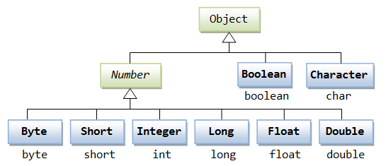

Java Number & Math Classes
Java Number
Generally, when numbers are needed, we usually use built-in data types, such as:byte、int、long、doubleetc.
Example
However, in actual development, we often encounter situations where objects are needed instead of built-in data types. To solve this problem, the Java language provides a corresponding wrapper class for each built-in data type.
All wrapper classes（Integer、Long、Byte、Double、Float、Short）are subclasses of the abstract class Number.
| Class Name | Corresponding Primitive Type | Description |
|---|---|---|
| Byte | byte | Byte wrapper class |
| Short | short | Short wrapper class |
| Integer | int | Integer wrapper class |
| Long | long | Long wrapper class |
| Float | float | Float wrapper class |
| Double | double | Double wrapper class |
| BigInteger | - | Immutable arbitrary-precision integer |
| BigDecimal | - | Immutable arbitrary-precision signed decimal number |

This kind of wrapping specially supported by the compiler is called boxing. So when a built-in data type is used as an object, the compiler boxes the built-in type into a wrapper class. Similarly, the compiler can also unbox an object into a built-in type.
The Number class belongs to the java.lang package.
Number is an abstract class whose main purpose is to provide unified conversion methods for various numeric types:
Example
// Abstract methods
public abstract int intValue();
public abstract long longValue();
public abstract float floatValue();
public abstract double doubleValue();
// Added in Java 8
public byte byteValue() {
return (byte)intValue();
}
public short shortValue() {
return (short)intValue();
}
}
Below is an example using an Integer object:
Test.java file code:
The result of compiling and running the above example is as follows:
15
When x is assigned an integer value, since x is an object, the compiler boxes x. Then, in order for x to perform addition, x needs to be unboxed.
Common method examples
Primitive type conversion
Example
System.out.println(num.intValue()); // 1234 (truncates decimals)
System.out.println(num.longValue()); // 1234
System.out.println(num.floatValue()); // 1234.56
System.out.println(num.doubleValue()); // 1234.56
Numeric comparison
Example
Integer x = 10;
Double y = 10.0;
// Correct comparison method: convert to the same type before comparing
System.out.println(x.doubleValue() == y.doubleValue()); // true
Special numeric handling
Handling large numbers
Example
BigDecimal bigDec = new BigDecimal("1234567890.1234567890");
// Large number arithmetic
BigInteger sum = bigInt.add(new BigInteger("1"));
BigDecimal product = bigDec.multiply(new BigDecimal("2"));
Number formatting
Example
nf.setMaximumFractionDigits(2);
System.out.println(nf.format(1234.5678)); // "1,234.57"
Autoboxing and Unboxing
Java 5+ supports automatic conversion:
Example
Integer autoBoxed = 42; // Compiler converts to Integer.valueOf(42)
// Auto-unboxing
int autoUnboxed = autoBoxed; // Compiler converts to autoBoxed.intValue()
Java Math Class
The Math class is a mathematical utility class provided by Java, located in the java.lang package, containing static methods for performing basic numeric operations.
Java's Math contains properties and methods for performing basic mathematical operations, such as elementary exponents, logarithms, square roots, and trigonometric functions.
All methods of Math are defined as static, so they can be directly called in the main function through the Math class.
Test.java file code:
The result of compiling and running the above example is as follows:
90 度的正弦值：1.0 0度的余弦值：1.0 60度的正切值：1.7320508075688767 1的反正切值： 0.7853981633974483 π/2的角度值：90.0 3.141592653589793
Advanced mathematical operations
1. Exponential and logarithmic operations
Example
Math.log(Math.E); // ln(e) = 1
Math.log10(100); // log10(100) = 2
2. Random number generation
Example
double random = Math.random();
// Generate a random integer in [1, 100]
int randomInt = (int)(Math.random() * 100) + 1;
3. Other operations
Example
Math.IEEEremainder(10, 3); // IEEE remainder → 1.0
4. Constant fields
Example
Math.E; // The base of natural logarithms e ≈ 2.718281828459045
Number & Math class methods
The following table lists some commonly used methods of the Number & Math classes:
| No. | Method and Description |
|---|---|
| 1 |
xxxValue() Converts a Number object to a value of the xxx data type and returns it. |
| 2 |
compareTo() Compares the number object with the argument. |
| 3 |
equals() Determines whether the number object is equal to the argument. |
| 4 |
valueOf() Returns a Number object of the specified built-in data type. |
| 5 |
toString() Returns the value as a string. |
| 6 |
parseInt() Parses the string as an int type. |
| 7 |
abs() Returns the absolute value of the argument. |
| 8 |
ceil() Returns the smallest integer greater than or equal to (>=) the given argument, as a double. |
| 9 |
floor() Returns the largest integer less than or equal to (<=) the given argument. |
| 10 |
rint() Returns the integer closest to the argument. The return type is double. |
| 11 |
round() It representsrounding, the algorithm isMath.floor(x+0.5), that is, add 0.5 to the original number and then round down. So, Math.round(11.5) results in 12, and Math.round(-11.5) results in -11. |
| 12 |
min() Returns the minimum of the two arguments. |
| 13 |
max() Returns the maximum of the two arguments. |
| 14 |
exp() Returns e (the base of natural logarithms) raised to the power of the argument. |
| 15 |
log() Returns the natural logarithm of the argument. |
| 16 |
pow() Returns the first argument raised to the power of the second argument. |
| 17 |
sqrt() Returns the arithmetic square root of the argument. |
| 18 |
sin() Returns the sine of the specified double argument. |
| 19 |
cos() Returns the cosine of the specified double argument. |
| 20 |
tan() Returns the tangent of the specified double argument. |
| 21 |
asin() Returns the arcsine of the specified double argument. |
| 22 |
acos() Returns the arccosine of the specified double argument. |
| 23 |
atan() Returns the arctangent of the specified double argument. |
| 24 |
atan2() Converts Cartesian coordinates to polar coordinates and returns the angle of the polar coordinates. |
| 25 |
toDegrees() Converts the argument to degrees. |
| 26 |
toRadians() Converts angles to radians. |
| 27 |
random() Returns a random number. |
Comparison of Math's floor, round, and ceil methods
| Parameter | Math.floor | Math.round | Math.ceil |
|---|---|---|---|
| 1.4 | 1 | 1 | 2 |
| 1.5 | 1 | 2 | 2 |
| 1.6 | 1 | 2 | 2 |
| -1.4 | -2 | -1 | -1 |
| -1.5 | -2 | -1 | -1 |
| -1.6 | -2 | -2 | -1 |
floor, round, and ceil examples:
The result of executing the above example is:
Math.floor(1.4)=1.0 Math.round(1.4)=1 Math.ceil(1.4)=2.0 Math.floor(1.5)=1.0 Math.round(1.5)=2 Math.ceil(1.5)=2.0 Math.floor(1.6)=1.0 Math.round(1.6)=2 Math.ceil(1.6)=2.0 Math.floor(-1.4)=-2.0 Math.round(-1.4)=-1 Math.ceil(-1.4)=-1.0 Math.floor(-1.5)=-2.0 Math.round(-1.5)=-1 Math.ceil(-1.5)=-1.0 Math.floor(-1.6)=-2.0 Math.round(-1.6)=-2 Math.ceil(-1.6)=-1.0Other extensions
Easier said than done x
502***892@qq.com
/** * @author Dale * java中的自动装箱与拆箱 * 简单一点说，装箱就是自动将基本数据类型转换为包装器类型；拆箱就是自动将包装器类型转换为基本数据类型。 */ public class Number { public static void main(String[] args) { /** Integer i1 = 128; // 装箱，相当于 Integer.valueOf(128); int t = i1; //相当于 i1.intValue() 拆箱 System.out.println(t); */ /** 对于–128到127（默认是127）之间的值,被装箱后，会被放在内存里进行重用 但是如果超出了这个值,系统会重新new 一个对象 */ Integer i1 = 200; Integer i2 = 200; /** 注意 == 与 equals的区别 == 它比较的是对象的地址 equals 比较的是对象的内容 */ if(i1==i2) { System.out.println("true"); } else { System.out.println("false"); } } }Easier said than done x
502***892@qq.com
estivalwind
fan***i_nj@sina.com
(1) Java will-128 ~ 127cache the integers, so when defining two variables with initialization values located-128 ~ 127between them, the two variables use the same address:
(2) When the values of two Integer variables exceed-128 ~ 127the range, the variables use different addresses:
estivalwind
fan***i_nj@sina.com
flaming
248***1347@qq.com
Reference address
Java 中 int 和 Integer 的区别
1.int 是基本数据类型，int 变量存储的是数值。Integer 是引用类型，实际是一个对象，Integer 存储的是引用对象的地址。
2.
Because new creates two objects, their memory addresses are different.
3.
Comparison of memory occupied by int and Integer:
Integer objects take up more memory. Integer is an object and needs to store object metadata. But int is a primitive type, so it takes up less space.
4.Integer variables not created with new andnew Integer()when compared with a variable created with new, the result is false.
/** * 比较非new生成的Integer变量与new生成的Integer变量 */ public class Test { public static void main(String[] args) { Integer i= new Integer(200); Integer j = 200; System.out.print(i == j); //输出：false } }Because Integer variables not created with new point to objects in the Java constant pool, andnew Integer()the variable created with new points to a newly created object in the heap. The two have different memory addresses, so the output is false.
5.Comparing two Integer objects not created with new, if the values of the two variables are in the range[-128,127]the comparison result is true; otherwise, the result is false.
/** * 比较两个非new生成的Integer变量 */ public class Test { public static void main(String[] args) { Integer i1 = 127; Integer ji = 127; System.out.println(i1 == ji);//输出：true Integer i2 = 128; Integer j2 = 128; System.out.println(i2 == j2);//输出：false } }When Java compilesInteger i1 = 127it translates toInteger i1 = Integer.valueOf(127)。
6.an Integer variable (whether created with new or not) compared with an int variable. As long as the values of the two variables are equal, the result is true.
/** * 比较Integer变量与int变量 */ public class Test { public static void main(String[] args) { Integer i1 = 200; Integer i2 = new Integer(200); int j = 200; System.out.println(i1 == j);//输出：true System.out.println(i2 == j);//输出：true } }When a wrapper class Integer variable is compared with a primitive int variable, Integer is automatically unboxed to int and then compared. In fact, it is comparing two int variables. If the values are equal, the result is true.
flaming
248***1347@qq.com
Reference address
yuki
897***223@qq.com
Math.floorIt is rounding down.
Math.ceilIt is rounding up.
Math.roundIt is rounding to an integer, but note:
yuki
897***223@qq.com
JavaNewer
529***970@qq.com
The concepts of boxing and unboxing are a bit special.
byte, int, long, double, etc. are Java primitive data types.
All wrapper classes (Integer, Long, Byte, Double, Float, Short) are subclasses of the abstract class Number.
包Wrapper classes and primitive data types are used in different scenarios and can also be mixed.
JavaNewer
529***970@qq.com
inytialf
iny***lf@163.com
Speaking offloor()和ceil()the understanding of the concept:
1. floorTake its literal meaning, that is "floor", the floor is under your feet, that isrounding down。
2. ceil是ceilingthe abbreviation of, that is, "ceiling", the ceiling is above your head, that isrounding up。
Here you need tonote, thereturn valuesof floor() and ceil() are bothdouble typenumeric values.
roundThe rounding of () can also be determined by introducing the y-axis:
Whether positive or negative, the rounding method requires that anydecimal with .5must berounded up。
Therefore,the rounding of negative decimals with .5, you just need todirectly take the absolute value，and add a minus sign, and it is done.
inytialf
iny***lf@163.com